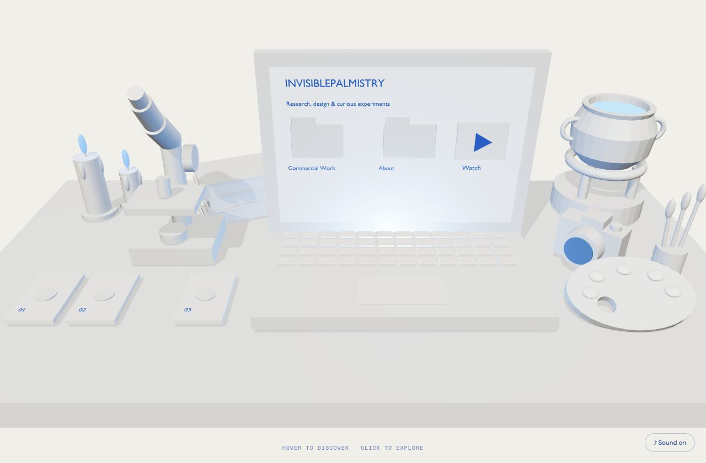

Hi, curious mind.
Let’s see where this leads.
I ask a lot of questions. Then I research, make things, and try them out. Sometimes they work. Sometimes they lead somewhere unexpected. This is where I share what I find.

Preparing the workbench…
EXPLORE THE OBJECTS
CURRENT EXPLORATIONS
Digital arts & humanities.
Ecological Echoes
Explore project ↗SPECIMEN 02Invisible Power
Explore project ↗02 / PLAYGROUND
Magic Artist Mirror
A reflection. A breath.
A message waiting for a little light.
beneath the surface.BREATH / TOUCH / LIGHT